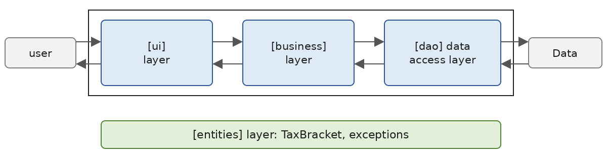
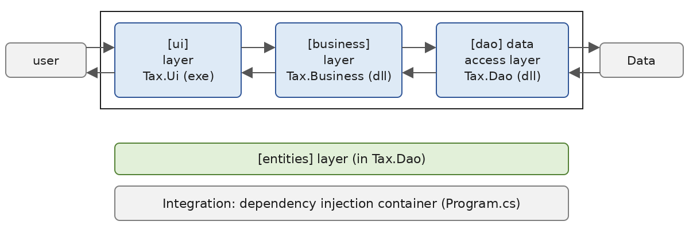

6. Arquitecturas en capas
6.1. Introducción
Retomemos la última versión de la aplicación de cálculo de impuestos (versión 3, capítulo anterior). Reducido a lo esencial, su programa de consola tenía la siguiente estructura:
Este programa combina tres procesos presentes en la mayoría de las aplicaciones:
- la obtención de datos almacenados en archivos, bases de datos, etc.: líneas 1–14;
- la interacción con el usuario: líneas 19–20 (entrada) y 23 (salida);
- el uso de un algoritmo de negocio, concretamente el cálculo del impuesto: línea 23. Este cálculo lo realizaba hasta ahora la clase [AbstractTax], la clase padre de [FileTax] y [JsonTax]: en la versión 3, la lectura de datos y el cálculo todavía se combinan dentro de un único objeto.
La experiencia ha demostrado que aislar estos distintos procesamientos en clases separadas mejora la mantenibilidad de la aplicación. La arquitectura de una aplicación estructurada de esta manera es la siguiente:

Esta arquitectura se denomina “arquitectura de tres niveles”. Normalmente, el término “nivel” se refiere a una parte de la aplicación que se ejecuta en una máquina distinta. Cuando las partes están en la misma máquina, se utiliza en su lugar el término “arquitectura en capas”:
- La capa [business] contiene las reglas de negocio de la aplicación. En nuestra aplicación, son las reglas que se usan para calcular el impuesto de un contribuyente. Esta capa necesita datos para funcionar:
- los tramos impositivos, que cambian cada año;
- el número de hijos, el estado civil del contribuyente y sus ingresos anuales;
- la capa de acceso a datos, o [dao] (DAO = Data Access Object), proporciona los datos ya almacenados en archivos o bases de datos. Esto incluye los tramos impositivos, como en la versión 3 de la aplicación;
- la capa de interfaz de usuario, o [ui] (UI = User Interface), proporciona los datos ingresados por el usuario y le muestra los resultados. Aquí esto se aplica al número de hijos, al estado civil y a los ingresos anuales del contribuyente.
En general:
- la capa [dao] se encarga del acceso a datos persistentes (archivos, bases de datos) o no persistentes (red, sensores, etc.);
- la capa [ui] se encarga de las interacciones con el usuario, si lo hay;
- las tres capas se hacen independientes entre sí mediante el uso de interfaces.
Retomaremos la aplicación [Tax], que ya hemos examinado varias veces, para darle una arquitectura en capas. Primero, debemos definir las interfaces de las distintas capas de la aplicación.
6.2. Las interfaces de la aplicación [Tax]
Recuerde que una interfaz define un conjunto de firmas de métodos y propiedades. Las clases que implementan la interfaz proporcionan la implementación real de esos métodos y propiedades.
Volvamos a la arquitectura en capas de nuestra aplicación:
En este tipo de arquitectura, el usuario suele tomar la iniciativa. El usuario hace una solicitud en [1] y recibe una respuesta en [8]. Esto se denomina ciclo de solicitud-respuesta. Tomemos el ejemplo del cálculo del impuesto de un contribuyente. Esto requerirá varios pasos:
- La capa [ui] pide al usuario su estado civil, su número de hijos y su salario anual. Esta es la operación [1] descrita anteriormente;
- una vez hecho esto, la capa [ui] pide a la capa [business] que calcule el impuesto. Para ello, le envía los datos que recibió del usuario. Esta es la operación [2];
- La capa [business] necesita cierta información para realizar su tarea: los tramos impositivos. Los solicita a la capa [dao] por la ruta [3, 4, 5, 6]: [3] es la solicitud inicial y [6] es la respuesta a esa solicitud;
- Con todos los datos que necesitaba, la capa [business] calcula el impuesto;
- La capa [business] ya puede responder a la solicitud que le hizo la capa [ui] en [2]. Esta es la ruta [7];
- La capa [ui] da formato a este resultado y luego lo presenta al usuario. Esta es la ruta [8];
- Podría imaginarse que el usuario realice simulaciones de impuestos y quiera guardarlas. Utilizaría la misma ruta, [1-8], para hacerlo.
Como se ve en esta descripción, una capa utiliza los recursos de la capa que está a su derecha, nunca los de la que está a su izquierda. Consideremos dos capas adyacentes:

La capa [A] hace solicitudes a la capa [B]. En los casos más simples, una capa se implementa con una sola clase. Pero una aplicación evoluciona con el tiempo, y la capa [B] puede tener sucesivamente distintas clases de implementación: [B1], [B2], y así sucesivamente. Si la capa [B] es la capa [dao], puede tener una implementación inicial, [B1], que obtiene los datos de un archivo. Unos años después, podría querer almacenar estos datos en una base de datos: entonces crearía una segunda clase de implementación, [B2]. Si, en la aplicación inicial, la capa [A] trabajaba directamente con la clase [B1], nos veríamos obligados a reescribir parcialmente el código de la capa [A]. Por ejemplo, supongamos que escribimos algo como lo siguiente en la capa [A]:
- Línea 1: se crea una instancia de la clase [B1];
- línea 3: se solicitan datos a esta instancia.
Si la nueva clase de implementación [B2] tiene métodos con la misma firma que la clase [B1], deberá cambiar todas las instancias de [B1] por [B2]. Este es el mejor de los casos, y es bastante improbable si no se ha prestado atención a estas firmas. En la práctica, es común que las clases [B1] y [B2] tengan firmas de métodos distintas, lo que significa que una parte importante de la capa [A] debe reescribirse.
Podemos mejorar esto colocando una interfaz entre las capas [A] y [B]. Esto fija en una interfaz las firmas de los métodos que la capa [B] expone a la capa [A]. El diagrama anterior se convierte en el siguiente:

La capa [A] ya no se comunica directamente con la capa [B] sino con su interfaz [IB]. En el código de la capa [A], la clase de implementación [Bi] de la capa [B] aparece ahora una sola vez, cuando se crea el objeto que implementa la interfaz [IB]. Después de eso, se utiliza la interfaz [IB], y no su clase de implementación. El código anterior queda así:
- Línea 1: se crea una instancia de
*[ib]que implementa la interfaz*[IB]al instanciar la clase*[B1]* ; - Línea 3: se solicitan datos a la instancia [ib].
Ahora, si reemplazamos la implementación [B1] de la capa [B] por una implementación [B2], y ambas implementaciones respetan la misma interfaz [IB], solo es necesario modificar la línea 1 de la capa [A]. Esta es una ventaja importante que, por sí sola, justifica el uso sistemático de interfaces entre dos capas.
Podemos ir aún más lejos y hacer que la capa [A] sea completamente independiente de la capa [B]. En el código anterior, la línea 1 plantea un problema porque incluye directamente en el código el nombre de la clase [B1]. Idealmente, la capa [A] debería obtener una implementación de la interfaz [IB] sin tener que especificar un nombre de clase. Esto sería coherente con el diagrama anterior: la capa [A] se relaciona con la interfaz [IB], y no hay razón para que necesite conocer el nombre de la clase que implementa esa interfaz.
Esto es lo que permite la inyección de dependencias (DI). La arquitectura anterior evoluciona de la siguiente manera:

Un componente transversal, el contenedor de inyección de dependencias, crea los objetos que implementan las capas y los conecta entre sí: entrega a la capa [A] una referencia al objeto que implementa la capa [B]. El código de la capa [A] adopta entonces la siguiente forma:
- Línea 2: la capa [A] recibe, a través de su constructor, una instancia [ib] que implementa la interfaz [IB]. No es la capa [A] la que la crea, sino el contenedor;
- Línea 7: se solicitan datos a la instancia [ib].
La clase de implementación [B1] ya no aparece en ninguna parte del código de la capa [A]. Cuando la implementación [B1] se reemplaza por una nueva implementación [B2], nada cambiará en el código de la capa [A]: lo único que cambiará es el único lugar de la aplicación donde se le indica al contenedor qué clase implementa [IB]. Este lugar incluso puede leer el nombre de la implementación que se va a usar desde un archivo de configuración.
El curso de 2008 usaba para ello el framework Spring.NET y un archivo de configuración XML llamado [App.config]. Spring.NET ya no recibe mantenimiento; .NET ofrece ahora su propio contenedor, [Microsoft.Extensions.DependencyInjection], que usan todas las aplicaciones ASP.NET Core. Este es el que utilizaremos en la versión 5 de la aplicación. La combinación de “interfaces de C# + inyección de dependencias” aporta una mejora decisiva al mantenimiento de las aplicaciones al hacer que las capas sean independientes entre sí.
Volvamos a la arquitectura en capas de nuestra aplicación. En casos simples, podemos comenzar por la capa [business] para explorar las interfaces de la aplicación. Para funcionar, la aplicación necesita datos:
- ya disponibles en archivos, bases de datos o a través de la red. Estos datos los proporciona la capa [dao];
- aún no disponibles. En ese caso, los proporciona la capa [ui], que los obtiene del usuario.
¿Qué interfaz debe ofrecer la capa [dao] a la capa [business]? La capa [dao] debe proporcionar los tramos impositivos a la capa [business]. En nuestra aplicación, la capa [dao] utiliza datos existentes pero no crea datos nuevos. Su interfaz puede ser la siguiente:
- Línea 3: la capa [dao] se coloca en el espacio de nombres [Dao]. Usamos espacios de nombres con ámbito de archivo (C# 10): la declaración [namespace Dao;] se aplica a todo el archivo, sin llaves ni sangría adicional;
- Línea 9: la interfaz [ITaxDao] define la propiedad de solo lectura [TaxBrackets], que proporciona los tramos impositivos a la capa [business];
- línea 1: importa el espacio de nombres en el que se define el tipo [TaxBracket]:
Como en las versiones 2 y 3, un tramo impositivo se representa mediante un [readonly record struct] (C# 10): una estructura de solo lectura para la que el compilador genera el constructor (a partir de los parámetros colocados después del nombre del tipo), las propiedades de solo lectura [Limit], [CoeffR] y [CoeffN], la igualdad por valor y el método [ToString]. Escribimos [new TaxBracket(4962M, 0M, 0M)] para crear un tramo. El curso de 2008 usaba una estructura con propiedades modificables; veremos que la imposibilidad de modificar un tramo elimina un efecto secundario de la antigua capa [business].
¿Qué interfaz debe presentar la capa [business] a la capa [ui]? Repasemos las interacciones entre estas dos capas:
- La capa [ui] pide al usuario su estado civil, su número de hijos y su salario anual. Esta es la operación [1] del esquema;
- Una vez hecho esto, la capa [ui] pide a la capa [business] que calcule el impuesto. Para ello, envía a la capa [business] los datos que recibió del usuario. Esta es la operación [2].
La interfaz de la capa [business] podría ser como sigue:
- Línea 1: todo lo relacionado con la capa [business] se coloca en el espacio de nombres [Business];
- línea 6: la interfaz [ITaxBusiness] define un solo método, que calcula el impuesto de un contribuyente a partir de su estado civil, su número de hijos y su salario anual.
Examinaremos ahora una primera implementación de esta arquitectura en capas.
6.3. Aplicación de ejemplo - Versión 4
6.3.1. El proyecto
La versión 4 es un único proyecto de consola, creado mediante:
Cada capa ocupa una carpeta distinta:
- La carpeta [Entities] contiene los tipos compartidos por las capas [ui], [business] y [dao]: la estructura [TaxBracket] y la excepción [TaxException], heredadas de la versión 3;
- la carpeta [Dao] contiene la interfaz y las clases de la capa [dao]. Usaremos dos implementaciones de la interfaz [ITaxDao]: la clase [HardwiredTax], cuyos datos están incluidos directamente en el código (versión 2), y la clase [FileTax], que lee los datos de un archivo de texto (versión 3). La lectura de un archivo JSON, la otra opción de la versión 3, se tratará en la versión 5;
- La carpeta [Business] contiene la interfaz y la clase de la capa [business];
- la carpeta [Ui] contiene la clase de la capa [ui];
- el archivo [Program.cs] crea las capas y las vincula entre sí;
- el archivo [TaxData.txt] contiene los tramos impositivos que lee la implementación [FileTax] de la capa [dao].
Los nombres de las carpetas son irrelevantes para el compilador: se compilan todos los archivos [.cs] de la carpeta del proyecto y de sus subcarpetas. Se trata de una convención que facilita la lectura del proyecto; se complementa nombrando el espacio de nombres igual que la carpeta.
El archivo [TaxV4.csproj] es el generado por [dotnet new], complementado con una instrucción para copiar los archivos de datos:
- Línea 12: los archivos [TaxData*.txt] se copian junto al ejecutable durante la compilación, en la carpeta [bin/Debug/net10.0]. La capa [dao] los busca en esa ubicación, ya sea que el programa se inicie con [dotnet run] desde la carpeta del proyecto o directamente desde otra carpeta.
6.3.2. Las entidades de la aplicación

Llamamos entidades a los tipos que atraviesan varias capas. Suelen ser las clases y estructuras que encapsulan los datos de la capa [dao]. Estas entidades generalmente llegan hasta la capa [ui]. Las entidades de la aplicación son la estructura [TaxBracket], ya presentada, y la excepción [TaxException] de la versión 3, junto con la lista de sus códigos de error:
- líneas 4–5: los códigos de error. El atributo [Flags] indica que los valores de la enumeración son bits que se pueden combinar con el operador [|]: el valor [ErrorCode.Field2 | ErrorCode.Field3] (8 + 16 = 24) significa que los campos 2 y 3 de una línea son incorrectos. El método [ToString] de una enumeración de este tipo muestra entonces “Field2, Field3”. El valor [Json] de la versión 3 se ha eliminado, ya que esta versión no lee el archivo JSON;
- línea 8: una excepción específica de la aplicación derivada de la clase [Exception];
- línea 11: el código de error, un entero que combina valores de [ErrorCode], es una propiedad [init] (C# 9): solo se le puede asignar un valor al crear el objeto, por ejemplo con un inicializador [new TaxException(...) { Code = ... }];
- líneas 14–15: dos constructores, uno con un mensaje y otro con un mensaje y la excepción original, que será accesible mediante la propiedad [InnerException]. Simplemente llaman al constructor correspondiente de la clase padre [Exception] ([: base(...)]).
En esta versión, solo la clase [FileTax] de la capa [dao] instancia [TaxException].
6.3.3. La capa [dao]
Repasemos la interfaz de la capa [dao]:
Implementamos esta interfaz de dos maneras distintas. Primero, con la clase [HardwiredTax]:
- línea 6: la clase [HardwiredTax] implementa la interfaz [ITaxDao];
- línea 9: implementación de la propiedad [TaxBrackets] de la interfaz. Es una propiedad automática de solo lectura, inicializada mediante un inicializador de propiedad (C# 6);
- líneas 11–17: el valor inicial es una expresión de colección (C# 12): la lista de elementos entre corchetes crea una matriz llamada [TaxBracket[]]. Cada elemento se crea con
***[new(...)]***: no se repite el tipo del objeto creado; se infiere del tipo esperado,[TaxBracket](C# 9).
La interfaz [ITaxDao] también la implementa la clase [FileTax], que lee los tramos impositivos de un archivo de texto. El archivo [TaxData.txt] es el siguiente:
Cada línea describe un tramo impositivo con el formato [limit:coeffR:coeffN]. Los números se escriben con punto decimal, sea cual sea el idioma del sistema; esto garantiza que el archivo sea legible en todas las máquinas. Los valores son los de la escala de impuestos de 2004 para los ingresos de 2003, conservados tal cual: se trata de un ejercicio. La clase [FileTax] es la siguiente:
- Línea 3: la directiva [using static] (C# 6) permite usar los miembros estáticos y los tipos anidados de un tipo sin prefijo. Los valores de una enumeración son constantes y, por lo tanto, miembros estáticos: escribimos [Field1] instead of [ErrorCode.Field1];
- línea 9: la clase [FileTax] implementa la interfaz [ITaxDao];
- línea 15: la propiedad de la interfaz [ITaxDao]. No tiene [set]: solo se le puede asignar un valor en el constructor (línea 75);
- línea 18: el constructor recibe el nombre del archivo de tramos impositivos;
- línea 23: los tramos impositivos leídos se acumulan en una lista, inicializada con una expresión de colección vacía;
- línea 25: el archivo se busca en la carpeta del ejecutable, [AppContext.BaseDirectory], donde el archivo [.csproj] lo copió. Si [fileName] es una ruta absoluta, [Path.Combine] la deja tal cual;
- líneas 29–31: si el archivo no existe, se lanza una [FileNotFoundException] con nuestro propio mensaje. El mensaje de excepción que lanzaría .NET de otro modo contiene la ruta completa del archivo;
- línea 33: [File.ReadLines] lee el archivo línea por línea: las líneas se leen a medida que avanza el bucle [foreach], y el archivo se cierra al final del bucle, incluso si se lanza una excepción;
- línea 43: la línea se divide en los dos puntos; la opción [StringSplitOptions.TrimEntries] elimina los espacios alrededor de cada campo;
- líneas 46–48: una línea que no tiene tres campos no es válida;
- líneas 53–55: conversión de los tres campos. Cada campo incorrecto agrega un bit al código de error mediante el operador [|=];
- líneas 58–60: una línea incorrecta lanza una [TaxException], cuyo mensaje indica el número y el contenido de la línea. El código, de tipo [ErrorCode], se convierte en entero mediante [(int)code];
- línea 63: el tramo leído se agrega a la lista;
- línea 66: el filtro de excepciones [when] (C# 6) intercepta solo los errores de E/S: [IOException], de la que deriva [FileNotFoundException], y [UnauthorizedAccessException] (permisos insuficientes). El patrón [e is IOException or UnauthorizedAccessException] (C# 9) comprueba ambos tipos. La [TaxException] lanzada en la línea 60 no se captura: se propaga tal cual al código que llama;
- líneas 69–71: el error de E/S se encapsula en una [TaxException] con el código [Access]; la excepción original se conserva en su propiedad [InnerException];
- línea 75: la lista se copia en una matriz. El operador [..] (“spread”) de una expresión de colección inserta todos los elementos de otra colección;
- líneas 79–80: conversión de un campo a [decimal]. El estilo [NumberStyles.AllowDecimalPoint] acepta solo dígitos y un punto decimal, y la referencia cultural invariable [CultureInfo.InvariantCulture] exige un punto como separador decimal. Así, “0,191” se rechaza, aunque una referencia cultural fr-FR lo habría aceptado. El método se escribe con un cuerpo de expresión [=>] (C# 6).
6.3.4. La capa [business]
Repasemos la interfaz de esta capa:
Su implementación, [TaxBusiness], es la siguiente:
- Línea 7: la clase [TaxBusiness] implementa la interfaz [ITaxBusiness]. La capa [business] debe colaborar con la capa [dao]: por lo tanto, recibe una referencia al objeto que implementa la interfaz [ITaxDao]. Esta referencia es el parámetro [dao] del constructor primario de la clase (C# 12): los parámetros enumerados después del nombre de la clase son los de su constructor, y pueden usarse en todo el cuerpo de la clase;
- Línea 10: al construir el objeto, la capa [business] solicita los tramos impositivos a la capa [dao] una sola vez y los almacena en un campo de solo lectura. Observe que la capa [business] conoce la capa [dao] solo a través de su interfaz [ITaxDao]: no sabe si los tramos impositivos provienen del código, de un archivo o, más adelante, de una base de datos;
- Líneas 16–17: la capa [business] no confía en quienes la llaman. Los métodos estáticos [ThrowIfNegative] (.NET 8) lanzan una [ArgumentOutOfRangeException] si su parámetro es negativo; el mensaje de la excepción contiene el nombre del parámetro;
- líneas 19–22: el número de partes. La división [nbChildren / 2M] es una división decimal porque [2M] es un [decimal]: 3 hijos equivalen a 1,5 partes;
- líneas 25–26: la renta imponible y el cociente familiar;
- líneas 29–35: buscamos el primer tramo cuyo umbral es mayor o igual que el cociente familiar. El último tramo, [brackets[^1]] (el índice [^1] hace referencia al último elemento, C# 8), se usa si ningún otro tramo corresponde: su umbral (0) no se utiliza;
- línea 39: el impuesto, truncado a su parte entera.
El código del curso de 2008 escribía [taxBrackets[taxBrackets.Length - 1].Limit = QF + 1] antes de buscar el tramo, de modo que el bucle de búsqueda siempre terminara. Esta instrucción modificaba el arreglo proporcionado por la [dao] capa: un efecto secundario sobre datos compartidos por todas las capas. De hecho, ya no podría escribirse así, puesto que un [TaxBracket] ahora es de solo lectura. El código moderno simplemente toma el último tramo cuando ningún límite es adecuado, sin modificar los datos que recibe.
6.3.5. La capa [ui]
En las versiones 2 y 3, la interfaz de usuario se escribía en el programa principal, después de la creación del objeto de cálculo. La única diferencia estaba en la forma de crear este objeto. Ahora aislamos esta interacción en una clase dentro de la capa [ui], que conoce la capa [business] únicamente a través de su interfaz:
- línea 6: la clase [Dialog] es estática: no tiene estado propio y contiene solo miembros estáticos;
- líneas 9–14: el mensaje de ayuda es un literal de cadena sin formato (C# 11), delimitado por tres comillas. Puede ocupar varias líneas; se elimina la sangría común de las líneas, determinada por la posición de las comillas de cierre;
- línea 17: el método [Run] recibe la capa [business] en forma de su interfaz [ITaxBusiness]. No sabe nada de la clase que la implementa ni de la capa [dao];
- Línea 23: [Console.ReadLine] produce [null] al final del flujo de entrada; el operador [?.] produce entonces [null] sin llamar a [Trim], y el operador [??] reemplaza [null] por la cadena vacía: un fin de flujo termina el diálogo igual que una línea vacía;
- línea 30: la línea ingresada se divide por espacios; la opción [StringSplitOptions.RemoveEmptyEntries] ignora los espacios múltiples;
- líneas 44–50: [int.TryParse(fields[1], out int nbChildren)] declara la variable de salida en la propia llamada (C# 7);
- línea 56: los parámetros son correctos: se solicita el cálculo a la capa [business].
6.3.6. Integración de las capas
Solo falta crear las capas y vincularlas entre sí. Este es el papel del programa principal [Program.cs]:
- línea 8: el argumento del programa selecciona la implementación de la capa [dao]: [hardwired] para la clase [HardwiredTax]; de lo contrario, el nombre del archivo leído por la clase [FileTax], con [TaxData.txt] como valor predeterminado. Observe que, con las instrucciones de nivel superior, los argumentos de la línea de comandos se almacenan en el arreglo [args];
- línea 13: creación de la capa [dao]. Este es el único lugar del programa donde se nombran las clases [HardwiredTax] y [FileTax] ;
- línea 15: creación de la capa [business], que recibe la capa [dao];
- Líneas 17–22: la creación de la capa [dao] puede lanzar una [TaxException]. Entonces se muestra el error, junto con el mensaje de la excepción original (si existe), y el programa termina con el código de salida 1. Como en la versión 3, el código se convierte a [ErrorCode] para mostrarlo en texto legible;
- Línea 26: las capas están listas: la capa [ui] interactúa con el usuario.
6.3.7. Ejecuciones
Con el archivo [TaxData.txt] (implementación [FileTax]), y probando la validación de las entradas:
Con la implementación [HardwiredTax]:
Con un archivo que no existe:
El código de error es [Access], y se muestra el mensaje de la excepción original, [FileNotFoundException].
Con el siguiente archivo, [TaxDataInvalid.txt], donde la línea 3 contiene comas decimales:
el resultado es:
Los campos 2 y 3 de la línea 3 son incorrectos: el código de error combina los bits de [Field2] y [Field3], y el método [ToString] de una enumeración [Flags] lo muestra como “Field2, Field3.”
6.3.8. Conclusión
La arquitectura en capas y el uso de interfaces han dado cierta flexibilidad a nuestra aplicación. Esto es evidente en la forma en que el programa principal crea las capas [dao] y [business]:
Cambiar la implementación de la capa [dao] modifica únicamente la línea 1. Una vez creadas las capas, el código de la capa [ui] es el mismo en ambos casos: se accede a la capa [business] a través de su interfaz [ITaxBusiness], y no a través de su clase de implementación.
La misma flexibilidad se observa en la capa [business]: se construye a partir de una referencia a la interfaz de la capa [dao]. Por lo tanto, cambiar la implementación de esta última no tiene ningún impacto en la capa [business]. Por eso nuestra única clase [TaxBusiness] pudo funcionar sin modificaciones con dos implementaciones distintas de la capa [dao].
6.4. Aplicación de ejemplo - Versión 5

Esta nueva versión se basa en la anterior con los siguientes cambios:
- Las capas [dao] y [business] se colocan cada una en una biblioteca de clases (DLL) y se prueban con el framework de pruebas unitarias MSTest;
- La capa [dao] recibe una tercera implementación, [JsonTax], que lee los tramos del impuesto desde un archivo JSON;
- la integración de las capas queda a cargo del contenedor de inyección de dependencias de .NET, y la implementación de la capa [dao] se selecciona desde un archivo de configuración.
En los proyectos grandes, varios desarrolladores trabajan en la misma aplicación. Las arquitecturas en capas facilitan esta forma de trabajo: dado que las capas se comunican entre sí mediante interfaces bien definidas, un desarrollador que trabaja en una capa no tiene que preocuparse por el trabajo de los demás desarrolladores en las otras capas. Basta con que todos respeten las interfaces.
Así, para probar la capa [business], el desarrollador necesita una implementación de la capa [dao]. Mientras esa implementación no esté terminada, el desarrollador puede usar una implementación ficticia de la capa [dao], siempre que respete la interfaz [ITaxDao]. Esta es otra ventaja de la arquitectura en capas: un retraso en la capa [dao] no impide probar la capa [business]. La implementación simulada (mock) tiene además la ventaja de ser mucho más simple de preparar que la capa [dao] real, que puede requerir un DBMS, conexiones de red, etc.
Una vez que la capa [dao] está completa y probada, se entrega a los desarrolladores de la capa [business] en forma de biblioteca (un proyecto o una DLL) en lugar de código fuente que deba copiarse. Finalmente, la aplicación se entrega como un ejecutable (el de la capa [ui]) y bibliotecas de clases (las demás capas).
6.4.1. La solución TaxV5
La versión 5 es una solución compuesta por cuatro proyectos: uno por capa, más un proyecto de pruebas unitarias. Se construye con los siguientes comandos, ingresados en la carpeta [TaxV5]:
- [dotnet new classlib] crea un proyecto de biblioteca de clases: al compilarlo se produce un archivo DLL, no un ejecutable. La plantilla crea un archivo [Class1.cs], que eliminamos;
- [dotnet new mstest] crea un proyecto de pruebas, MSTest, que se describe más adelante;
- [dotnet new sln --format slnx] crea el archivo de solución [TaxV5.slnx], en el formato XML introducido por el SDK en .NET 9. Este es el formato predeterminado de [dotnet new sln] desde .NET 10; la opción [--format slnx] solo lo hace explícito; [dotnet sln add] le agrega los proyectos;
- [dotnet add reference] agrega una referencia de proyecto a proyecto: la capa [business] usa la capa [dao], la capa [ui] usa las otras dos, al igual que las pruebas.
Esto da como resultado la siguiente estructura de árbol:
El archivo de solución es el siguiente:
El comando [dotnet build TaxV5.slnx] compila los cuatro proyectos en el orden especificado por sus referencias: primero [Tax.Dao] , luego [Tax.Business], después [Tax.Ui] y, por último, [Tax.Tests].
6.4.2. La capa [dao]
El proyecto [Tax.Dao] contiene la capa [dao] y las entidades de la aplicación. Su archivo de proyecto es el siguiente:
- líneas 4–6: las propiedades generadas por [dotnet new classlib]. No hay una etiqueta [OutputType]: el proyecto produce una biblioteca [Tax.Dao.dll];
- Líneas 12–13: los archivos de datos se copian a la carpeta de compilación. Los archivos marcados de esta manera también se copian a la carpeta de compilación de cualquier proyecto que haga referencia a [Tax.Dao]: los proyectos [Tax.Ui] y [Tax.Tests] tendrán los archivos de datos sin necesidad de declararlos.
Entidades
La estructura [TaxBracket] y la clase [TaxException] son las de la versión 4. Solo se elimina del archivo la enumeración [ErrorCode] : [TaxException] pasa así a ser común a todas las implementaciones de la capa [dao], sin estar atada a los códigos de ninguna de ellas:
- Línea 7: el código de error sigue siendo un simple entero: cada implementación de la capa [dao] define sus propios códigos.
La implementación [FileTax]
La interfaz [ITaxDao] y la clase [HardwiredTax] son las de la versión 4. La clase [FileTax] difiere únicamente en la ubicación de sus códigos de error:
- líneas 11–12: los códigos de error, que antes estaban en la enumeración [ErrorCode] dentro del espacio de nombres [Entities], se han trasladado a la clase [FileTax], en forma de una enumeración anidada [ErrorCodes]: se trata, en efecto, de códigos propios de esta implementación de la interfaz [ITaxDao] ([JsonTax] tiene los suyos). Se escriben [ErrorCodes.Field1] dentro de la clase y [FileTax.ErrorCodes.Field1] fuera de ella. La directiva [using static] de la versión 4 ya no es necesaria.
Más adelante, en el constructor:
- líneas 63, 72: los errores se encapsulan en una [TaxException]. El código de error, de tipo [ErrorCodes], se convierte en entero mediante [(int)code].
La implementación [JsonTax]
El capítulo anterior mostró cómo leer datos en formato JSON con [System.Text.Json]. La tercera implementación de la capa [dao] lee los tramos del impuesto del siguiente archivo [TaxData.json]:
La clase [JsonTax] es la siguiente:
- Línea 11: códigos de error de esta implementación: error de acceso al archivo o contenido incorrecto;
- Líneas 27–31: el archivo se lee por completo en una cadena, con el mismo manejo de errores de E/S que en [FileTax];
- línea 43: la cadena JSON se convierte en un arreglo [TaxBracket[]]. El segundo parámetro, [BracketsJsonContext.Default.TaxBracketArray], proporciona el código de deserialización para este tipo;
- Línea 44: [Deserialize] devuelve [null] si el archivo contiene el literal JSON [null]; entonces la expresión [?? throw] (C# 7) lanza una excepción;
- líneas 46–50: un archivo que no es un arreglo JSON de tramos provoca una [JsonException], encapsulada en una [TaxException] con código [Format];
- líneas 58–60: sin un parámetro de este tipo, [JsonSerializer] descubre las propiedades de [TaxBracket] en tiempo de ejecución, mediante reflexión. Aquí, el atributo [JsonSerializable] indica al compilador que genere, dentro de la clase parcial [BracketsJsonContext], el código de (de)serialización para el tipo [TaxBracket[]]. Este código es más rápido y también funciona en aplicaciones compiladas a código nativo (AOT), donde la reflexión está deshabilitada, que es el comportamiento predeterminado de las aplicaciones de archivo único de .NET 10 que utilizaremos. La opción [JsonSerializerDefaults.Web] asigna los nombres JSON en camelCase ([limit]) a las propiedades de C# ([Limit]). Observe que [System.Text.Json] puede construir un [record struct] posicional llamando a su constructor.
Un programa de prueba
Antes de escribir pruebas automatizadas, realicemos una primera prueba visual de la capa [dao]. .NET 10 permite que una aplicación de archivo único haga referencia a un proyecto mediante la directiva [#:project]. El programa [Trials/trial-dao.cs] muestra los tramos proporcionados por las tres implementaciones:
- Línea 1: el programa usa el proyecto [Tax.Dao]. Este proyecto se compila junto con el programa, y sus archivos de datos se copian junto al ejecutable del programa de prueba. Nota: si luego modifica el proyecto referenciado sin modificar el programa, [dotnet run trial-dao.cs] puede reutilizar el ejecutable ya construido; la opción [--no-cache] fuerza entonces una nueva compilación;
- línea 8: un arreglo de las tres implementaciones de la interfaz [ITaxDao];
- línea 11: [GetType] devuelve el tipo real del objeto, cuyo nombre de clase es [Name];
- líneas 18–22: manejo de una posible [TaxException].
Resultados:
Las tres implementaciones devuelven los mismos tramos. La visualización de los números [decimal] sigue la configuración regional en-US del usuario: punto decimal.
6.4.3. La capa [business]
El archivo de proyecto [Tax.Business.csproj] es el siguiente:
- Línea 11: la referencia al proyecto [Tax.Dao] agregada por [dotnet add reference]. En el curso de 2008, la DLL compilada hacía referencia a la capa [dao], que había que recuperar de una carpeta llamada [bin]; una referencia de proyecto a proyecto compila [Tax.Dao] antes que [Tax.Business] y siempre usa su última versión.
La interfaz [ITaxBusiness] y la clase [TaxBusiness] son de la versión 4. El programa de prueba [Trials/trial-business.cs] realiza algunos cálculos de impuestos:
- Línea 1: el programa hace referencia al proyecto [Tax.Business]; como este proyecto hace referencia a [Tax.Dao], el programa también tiene acceso a la capa [dao] y sus funcionalidades;
- Línea 9: creación de las capas [dao] y [business] . La capa [dao] se implementa mediante la clase [FileTax];
- Líneas 10–13: llamadas repetidas al único método de la interfaz [ITaxBusiness].
Resultados:
Una pareja casada con 2 hijos y una persona soltera con 3 hijos tienen el mismo número de partes (3): sus impuestos son iguales.
6.4.4. Pruebas unitarias con MSTest
6.4.4.1. El principio
Las pruebas realizadas hasta ahora se basaban en la verificación visual: comprobábamos que la pantalla mostrara los resultados esperados. Este método es impracticable cuando hay muchas pruebas que ejecutar: los humanos son propensos a la fatiga, y su capacidad para verificar resultados disminuye a medida que avanza el día. Por lo tanto, las pruebas deben automatizarse y no requerir ninguna intervención humana.
Una aplicación evoluciona con el tiempo. En cada actualización, debemos verificar que no “regrese” a un estado anterior, es decir, que siga superando las pruebas de funcionalidad realizadas durante su desarrollo inicial. Estas pruebas se llaman pruebas de no regresión. Una aplicación de tamaño moderado puede requerir cientos de pruebas: de hecho, se prueba cada método de cada clase de la aplicación. Estas se llaman pruebas unitarias.
Se han desarrollado frameworks para automatizar estas pruebas. El curso de 2008 usaba NUnit 2.4 y su interfaz gráfica de usuario. Aquí usamos MSTest, el framework de pruebas de Microsoft, en su versión 4 (NUnit y xUnit son otros dos frameworks muy utilizados que funcionan según el mismo principio). Las pruebas se ejecutan con el comando [dotnet test] desde la línea de comandos: esto permite lanzarlas automáticamente, por ejemplo, cada vez que se despliegan cambios de código en un servidor de integración continua. Los entornos integrados (Visual Studio, VS Code, Rider) también cuentan con un explorador de pruebas que muestra las pruebas en una estructura de árbol.
6.4.4.2. Un primer ejemplo
Examinemos el principio de las pruebas con MSTest mediante un ejemplo. Creamos un proyecto de pruebas con el comando:
La plantilla crea un archivo de proyecto, que modificamos para usar la versión 4.0.2 de MSTest:
- Línea 11: el proyecto usa el paquete NuGet [MSTest]. Este paquete incluye el framework (los atributos y la clase [Assert]), el adaptador que permite a [dotnet test] encontrar y ejecutar las pruebas, y analizadores de código que emiten advertencias sobre pruebas mal escritas;
- Línea 15: un [using] global: el espacio de nombres [Microsoft.VisualStudio.TestTools.UnitTesting] de MSTest se importa en todos los archivos del proyecto.
La plantilla también crea un archivo [MSTestSettings.cs], que especifica que las pruebas deben ejecutarse en paralelo. Lo reemplazamos por el siguiente para que las pruebas se ejecuten una tras otra y sus resultados aparezcan en un orden coherente:
- Línea 2: un atributo que se aplica a todo el ensamblado (DLL) y no a una clase específica.
La clase de pruebas [Tests1] es la siguiente:
- Línea 4: el atributo [TestClass] indica que la clase contiene pruebas. Debe ser pública;
- línea 8: el método que se prueba. En un proyecto real, estaría en otro proyecto, referenciado por el proyecto de pruebas;
- Líneas 11–13: el constructor. Se usa solo para mostrar un mensaje en pantalla: queremos ver cuándo se ejecuta;
- línea 17: el atributo [TestInitialize] designa un método que se ejecuta antes de cada prueba;
- línea 24: el atributo [TestCleanup] designa un método que se ejecuta después de cada prueba;
- línea 31: el atributo [TestMethod] designa un método de prueba. Un método de prueba es público, no devuelve nada (o devuelve una [Task] si es asíncrono) y, con una excepción que veremos, no tiene parámetros;
- línea 35: el método [Assert.AreEqual(expected, actual)] verifica que el valor obtenido sea igual al valor esperado. Si no es así, lanza una excepción y la prueba falla. Aquí, la aserción debe cumplirse;
- línea 43: esta aserción debe fallar. El tercer parámetro es el mensaje que se muestra en caso de fallo.
Las pruebas se ejecutan con el comando [dotnet test] en la carpeta del proyecto. La opción [--logger "console;verbosity=detailed"] muestra los detalles de cada prueba, incluida su salida en pantalla:
- línea 8: la prueba [T1] pasó;
- líneas 10–13: sus salidas en pantalla: se ejecutó el constructor, seguido del método [Before], la prueba y, por último, el método [After];
- línea 16: la prueba [T2] falló;
- línea 18: el mensaje de error: el valor esperado, el valor real, las expresiones que los produjeron y el mensaje pasado a [Assert.AreEqual];
- línea 19: MSTest también muestra la pila de llamadas en el momento del fallo, que conduce a la línea defectuosa. La hemos eliminado de la salida;
- Líneas 22–25: la salida de la prueba [T2]. Observe que el constructor se ejecutó de nuevo: MSTest crea una nueva instancia de la clase de pruebas para cada prueba. Así, las pruebas son independientes entre sí: una prueba no puede verse afectada por el estado que deja otra. NUnit, en cambio, ejecutaba el constructor una sola vez;
- líneas 28–34: las pruebas de la clase [Tests2], que se muestra a continuación;
- líneas 36–39: los resultados: 8 pruebas pasaron y 1 falló. El comando [dotnet test] termina entonces con un código de salida distinto de cero, lo que permite a un script detectar el fallo.
Para ejecutar solo un subconjunto de las pruebas, use la opción [--filter]: [dotnet test --filter Name=T1] ejecuta solo la prueba [T1], mientras que [dotnet test --filter ClassName=DemoTests.Tests2] ejecuta las pruebas de la clase [Tests2].
6.4.4.3. Otras aserciones
La clase [Assert] tiene muchos métodos. La clase [Tests2] incluye algunos de ellos:
- líneas 12–13: verifican si una expresión booleana es verdadera o falsa;
- líneas 16–17: verifican si una referencia es no nula o nula;
- líneas 18–19: verifican si dos referencias apuntan al mismo objeto;
- líneas 27–28: los cálculos con números reales [double] son aproximados: [0.1 + 0.2] no es exactamente igual a [0.3]. Por eso comparamos dos números reales con cierto margen de error, en este caso una millonésima;
- líneas 36–40: aserciones sobre cadenas y colecciones, agregadas por versiones recientes de MSTest. Producen mensajes de error más precisos que [Assert.IsTrue(message.StartsWith("Line"))];
- líneas 48–49: [Assert.ThrowsExactly<T>(action)] ejecuta la acción (una función anónima [() => ...]) y verifica que lance una excepción exactamente del tipo [T]. Devuelve la excepción lanzada, lo que permite verificar luego sus propiedades. La variante [Assert.Throws<T>] también acepta excepciones de tipos derivados de [T];
- líneas 55–58: una prueba parametrizada. El método de prueba tiene parámetros, y cada atributo [DataRow] proporciona un conjunto de valores para esos parámetros. La prueba se ejecuta una vez por cada atributo [DataRow]: eso es lo que mostraban las líneas [T7 (1,1,2)], [T7 (2,3,5)], y [T7 (-1,1,0)] de los resultados anteriores.
Resumamos los principales métodos de la clase [Assert]:
Método | Verifica que |
Assert.AreEqual(expected, actual) | los dos valores son iguales (método Equals) |
Assert.AreEqual(actual1, actual2, delta) | los dos valores reales son iguales con una tolerancia de delta |
Assert.AreNotEqual(v1, v2) | los dos valores son distintos |
Assert.AreSame(o1, o2), Assert.AreNotSame(o1, o2) | las dos referencias apuntan (o no) al mismo objeto |
Assert.IsNull(o), Assert.IsNotNull(o) | la referencia es nula (o no) |
Assert.IsTrue(b), Assert.IsFalse(b) | la expresión booleana es verdadera (o falsa) |
Assert.IsInstanceOfType<T>(o) | el objeto es de tipo T o de un tipo derivado |
Assert.HasCount(n, collection) | la colección tiene n elementos |
Assert.Contains(element, collection) | la colección (o la cadena) contiene el elemento |
Assert.StartsWith(start, string) | la cadena comienza con start |
Assert.ThrowsExactly<T>(action) | la acción lanza una excepción exactamente del tipo T |
CollectionAssert.AreEqual(c1, c2) | las dos colecciones tienen los mismos elementos, en el mismo orden |
Todos estos métodos aceptan un último parámetro opcional: el mensaje que se muestra en caso de fallo.
6.4.4.4. Pruebas de la capa [dao]
Volvamos a la aplicación [Tax]. El proyecto [Tax.Tests] fue creado con [dotnet new mstest]. Su archivo de proyecto es el siguiente:
- Líneas 17–18: las capas que se prueban;
- línea 27: un archivo de datos incorrecto, que se usa para probar los errores. Los archivos [TaxData.txt] y [TaxData.json] se copian mediante la referencia al proyecto [Tax.Dao].
El archivo [MSTestSettings.cs] pertenece al proyecto [DemoTests]. La clase [DaoTests] prueba la capa [dao]:
- líneas 11–16: un método que crea una capa [dao] a partir del nombre de su clase, mediante una expresión [switch] (C# 8);
- líneas 21–24: la misma prueba se ejecuta para las tres implementaciones. Verifica que haya 7 tramos y comprueba el valor del tramo n.º 2 (el tercero). Los valores esperados se escriben con el sufijo [M]: son [decimal], igual que las propiedades que se comparan;
- líneas 36–40: las tres implementaciones devuelven exactamente los mismos tramos. [CollectionAssert.AreEqual] compara los arreglos elemento por elemento; la comparación de dos valores [TaxBracket] es una comparación por valor, generada por el compilador para un [record struct];
- líneas 45–49: un archivo inexistente provoca una [TaxException] con código [Access], que encapsula una [FileNotFoundException];
- líneas 54–58: el archivo [TaxDataInvalid.txt] produce una [TaxException] cuyo código combina los bits de [Field2] y [Field3];
- líneas 63–66: la misma verificación para la implementación [JsonTax].
6.4.4.5. Pruebas de la capa [business]
La clase [BusinessTests] prueba la capa [business]:
- Líneas 12–17: la capa [business] que se prueba está construida sobre la capa [dao] [HardwiredTax], que no depende de ningún archivo. Dado que MSTest crea una nueva instancia de la clase para cada prueba, cada prueba tiene capas completamente nuevas;
- líneas 22–28: cálculos cuyos resultados se conocen. Son los valores de control de la aplicación, ya obtenidos por versiones anteriores: deben seguir siendo exactos en todas las versiones futuras;
- líneas 35–39: el cálculo del impuesto no modifica los tramos proporcionados por la capa [dao]. Se hace una copia ([.. dao.TaxBrackets]) antes de un cálculo que usa el último tramo, y luego se comparan los resultados. La prueba deja constancia del defecto de la versión de 2008: si alguien lo reintrodujera, esta prueba lo señalaría;
- líneas 44–47: se rechazan los parámetros negativos;
- líneas 51–53: una capa [dao] ficticia, como la que usaría el desarrollador de la capa [business] antes de que la capa [dao] real esté lista: un único tramo de impuesto, una tasa del 10 % de la renta imponible. Es una clase anidada dentro de la clase de pruebas;
- líneas 58–62: la capa [business] funciona con la capa [dao] ficticia. Así, la capa [business] se prueba de forma aislada, independientemente de las implementaciones reales de la capa [dao].
6.4.4.6. Ejecución de las pruebas
En la carpeta [Tax.Tests]:
Las 16 pruebas pasaron: cada atributo [DataRow] cuenta como una prueba. Ahora consideramos que las capas [dao] y [business] son operativas. A diferencia de 2008, no es necesario reconstruir las DLL de las capas para excluir las clases de prueba: las pruebas están en un proyecto aparte, y las bibliotecas [Tax.Dao.dll] y [Tax.Business.dll] contienen únicamente el código de las capas. El comando [dotnet test TaxV5.slnx], ejecutado en la carpeta de la solución, ejecuta las pruebas de todos los proyectos de prueba de la solución.
6.4.5. La capa [ui]
El archivo de proyecto [Tax.Ui.csproj] es el siguiente:
- Línea 4: el proyecto genera un ejecutable;
- Líneas 12–13: la capa [ui] usa las capas [business] y [dao];
- Líneas 18–19: dos paquetes NuGet: el contenedor de inyección de dependencias y el lector de archivos de configuración JSON. Se agregaron con los comandos [dotnet add package Microsoft.Extensions.DependencyInjection --version 10.0.12] y [dotnet add package Microsoft.Extensions.Configuration.Json --version 10.0.12];
- Línea 24: los archivos de configuración se copian junto al ejecutable.
La clase [Dialog] es la de la versión 4, complementada con un método que muestra una excepción y todas las excepciones que encapsula:
- línea 63: una cadena de 40 guiones, creada por el constructor [string(char c, int count)];
- línea 65: el bucle recorre la cadena de excepciones: cada excepción da acceso, mediante su propiedad [InnerException], a la excepción que encapsula, hasta la última, donde [InnerException] es igual a [null]. El tipo [Exception?] indica que la variable [e] puede ser igual a [null];
- Línea 67: para cada excepción, se muestran el nombre completo de su clase (incluido el espacio de nombres) y su mensaje.
La clase [Dialog] es pública: las versiones posteriores de la aplicación, que cambiarán la capa [dao], reutilizarán la capa [ui] haciendo referencia al proyecto [Tax.Ui] y llamando a [Dialog.Run(business)].
6.4.6. Integración de las capas mediante inyección de dependencias
En la versión 4, el programa principal creaba las capas [dao] y [business] nombrando sus clases de implementación:
Aparte de estas líneas, nada en la aplicación cambia cuando cambia la implementación de una capa, ya que cada capa se comunica con la siguiente mediante una interfaz. Podemos llevar la independencia de las capas un paso más allá confiando su creación a un contenedor de inyección de dependencias y colocando la elección de la implementación de la capa [dao] en un archivo de configuración. Cambiar la implementación de esta capa consiste entonces simplemente en modificar ese archivo, sin recompilar la aplicación.

En el ejemplo anterior, la capa [ui] solicita [0] la capa [business] al contenedor de inyección de dependencias. Para crearla, el contenedor crea primero la capa [dao] [1], luego la capa [business] [2], a la que le pasa la capa [dao]. Por último, devuelve una referencia a la capa [business] [3] a la capa [ui].
6.4.6.1. El archivo de configuración
La elección de la implementación de la capa [dao] se especifica en el archivo [appsettings.json]:
- Línea 2: una sección [Dao] contiene la configuración de la capa [dao];
- Línea 3: la clase que implementa la capa [dao]: [HardwiredTax], [FileTax], o [JsonTax];
- Línea 4: el archivo de datos, para las implementaciones que leen uno.
[appsettings.json] es el nombre estándar del archivo de configuración de las aplicaciones .NET, en particular de las aplicaciones ASP.NET Core. Reemplaza a los archivos XML [App.config] de .NET Framework, que Spring.NET utilizaba durante el curso de 2008. El proyecto contiene otros tres archivos de configuración, que el programa usa si se pasan sus nombres como argumentos:
6.4.6.2. El programa principal
El programa principal [Program.cs] del proyecto [Tax.Ui] es el siguiente:
- línea 9: el nombre del archivo de configuración: [appsettings.json] de forma predeterminada, o el que se pase como argumento;
- líneas 16–19: lectura de la configuración. [ConfigurationBuilder] ensambla una configuración a partir de fuentes: en este caso, un único archivo JSON ([AddJsonFile]), ubicado en la carpeta del ejecutable ([SetBasePath]). El parámetro [optional: false] (un parámetro con nombre, C# 4) hace que el archivo sea obligatorio: su ausencia provoca una [FileNotFoundException];
- líneas 20–21: la configuración se lee como un diccionario. La clave [Dao:Implementation] hace referencia a la propiedad [Implementation] de la sección [Dao]; el separador de niveles es el signo de dos puntos. El indexador devuelve [null] si la clave no existe: el operador [??] proporciona entonces un valor predeterminado;
- línea 24: la colección de servicios, es decir, la lista de tipos que el contenedor puede crear y cómo crearlos;
- líneas 26–31: el registro de la capa [dao]. [AddSingleton<ITaxDao>(factory)] indica que cuando se solicite un [ITaxDao], el contenedor llamará a la función [factory] para crearlo. "Singleton" significa que el objeto se creará una sola vez, en la primera solicitud, y que todas las solicitudes posteriores devolverán el mismo objeto: solo hay una capa [dao] en la aplicación. La fábrica selecciona la clase según la configuración, mediante la expresión [switch]; su parámetro, el propio contenedor, no se usa aquí, de ahí el nombre [_] (“descarte”). Una implementación desconocida produce una [TaxException];
- línea 34: el registro de la capa [business]: cuando se solicite un [ITaxBusiness], el contenedor creará un objeto [TaxBusiness]. Para ello, examina el constructor de la clase [TaxBusiness], ve que espera un [ITaxDao] y le pasa la capa [dao] registrada anteriormente: esto es la inyección de dependencias. La capa [dao] es una dependencia de la capa [business];
- línea 37: creación del contenedor a partir de la colección de servicios;
- línea 38: se solicita al contenedor la capa [business]. El contenedor crea la capa [dao] y luego la capa [business]. [GetRequiredService] lanza una excepción si el tipo solicitado no se ha registrado. Observe que la capa [ui] obtiene la capa [business] sin especificar la clase que la implementa;
- líneas 40–44: cualquier error de configuración o de creación de las capas se muestra junto con el seguimiento de la pila de la excepción, y el programa termina;
- línea 48: la interfaz de usuario, idéntica a la de la versión 4.
El curso de 2008 incluía en el archivo de configuración los nombres completos de las clases que se debían instanciar ([Dao.FileTax, TaxV5-dao]): Spring.NET las creaba mediante reflexión. Hemos elegido, en cambio, definir las implementaciones posibles en la fábrica: el archivo de configuración simplemente selecciona entre ellas, y el compilador verifica que las clases existan y tengan los constructores requeridos. En ambos casos, el código de las capas [ui] y [business] nunca especifica la clase que implementa la capa [dao].
6.4.6.3. Ejecuciones
Con el archivo [appsettings.json] (implementación [FileTax]):
Con la implementación [JsonTax]:
Con la implementación [HardwiredTax]:
Cambiamos de implementación de la capa [dao] sin cambiar una sola línea de código ni recompilar la aplicación.
Con el archivo [appsettings-error.json], que hace referencia a un archivo de datos inexistente:
- línea 6: la excepción original, de tipo [FileNotFoundException], lanzada por la clase [FileTax];
- línea 4: la capa [dao] la encapsuló en una [TaxException]. Es esta excepción la que se propagó hasta el programa principal mediante la llamada a [GetRequiredService].
El contenedor de .NET deja pasar sin modificarlas las excepciones lanzadas durante la creación de objetos. Con Spring.NET, el mismo error producía una cadena de ocho excepciones, seis de las cuales eran causadas por el framework ([ConfigurationErrorsException], [ObjectCreationException], [TargetInvocationException], etc.), seguidas de las dos excepciones mencionadas anteriormente. La conclusión clave de esta cadena es que, con frecuencia, la excepción más profunda (la última que se muestra) es la más significativa.
La inyección de dependencias merece por sí sola un capítulo aparte. Solo usamos lo esencial: registrar servicios ([AddSingleton]), construir el contenedor ([BuildServiceProvider]) y obtener un servicio ([GetRequiredService]). El contenedor también puede crear un objeto nuevo para cada solicitud ([AddTransient]) o un objeto por “ámbito”, como por solicitud (HTTP) en una aplicación web ([AddScoped]). Volveremos a verlo en las aplicaciones ASP.NET Core, donde es omnipresente. Puede profundizar en este tema en la documentación de Microsoft: Dependency Injection .NET.
6.5. Conclusión
Este capítulo ha dado a la aplicación [Tax] la arquitectura que conservará hasta el final del curso:
- una capa [dao] que proporciona los tramos del impuesto a través de la interfaz [ITaxDao];
- una capa [business] que calcula el impuesto e interactúa con la capa [dao] únicamente a través de su interfaz;
- una capa [ui] que interactúa con el usuario y conoce la capa [business] únicamente a través de su interfaz [ITaxBusiness];
- un programa principal (el único que conoce las clases de implementación) que crea las capas y las vincula, en este caso mediante un contenedor de inyección de dependencias y un archivo de configuración;
- pruebas unitarias automatizadas, que verifican cada capa de forma independiente de las demás y garantizan la no regresión de la aplicación.
Los beneficios de esta arquitectura se verán plenamente en los capítulos siguientes, donde las bibliotecas [Tax.Dao], [Tax.Business] y [Tax.Ui] de la versión 5 se reutilizarán tal cual mediante referencias de proyecto:
- Versión 6 (capítulo ADO.NET): una nueva implementación, [MySqlTax], de la capa [dao] lee los tramos del impuesto desde una base de datos MySQL. Las capas [business] y [ui] permanecen sin cambios;
- Versión 7 (capítulo Entity Framework Core): una implementación [EfTax] de la capa [dao] usa el ORM Entity Framework Core para acceder a la misma base de datos;
- Versión 8 (capítulo Internet): la capa [business] se instala en un servidor TCP, que calcula los impuestos para clientes remotos; se trata, por lo tanto, de una arquitectura de “tres niveles” en sentido estricto;
- Versión 9 (capítulo Servicios web): la capa [business] se expone mediante un servicio web REST/JSON escrito con ASP.NET Core, cuyo cliente de consola usa [HttpClient].
Cada vez, el trabajo se limitará a escribir la nueva capa y modificar el programa que integra las capas: ese es todo el sentido de la arquitectura en capas.